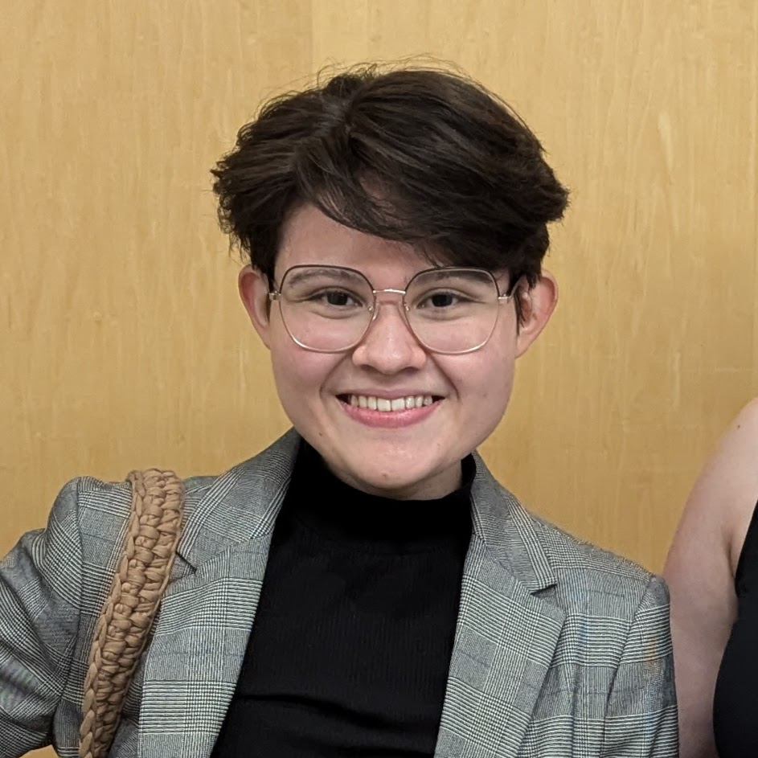

Bachelor of Science in Computer Science (B.S.C.S.)
Master of Science in Computer Science
Hi! I’m Maria, a computer science student interested in systems, security,
and understanding how real-world devices work beneath the surface. For
our senior design project, I’m working on reverse engineering the Amazon Echo,
combining software analysis and low-level exploration to better understand
how hardware and firmware interact in consumer devices. I enjoy breaking
down complex systems and clearly documenting what I learn along the way.
Fun fact: I love chocolate ice cream—but coffee ice cream is superior.
Bachelor of Electrical and Computer Engineering (B.E.C.E)
My name is Katelyn Toto, and I am majoring in Electrical and Computer
Engineering with a minor in Computer Science at The Catholic University
of America. During my time in college, I have developed a strong interest
in understanding the details of how and why things work, particularly
through embedded systems and microprocessors. My favorite class at CUA
has been Programmable Logic Devices and HDL Design with Professor Kim.
A fun fact about me is that I have a strong New York City accent—if we
ever meet, ask me to say “dog” or "walk."
Bachelor of Science in Computer Science (B.S.C.S.)
Bachelor of Science in Mathematics
My name is Hector Vega, I am a bachelor student of Computer Science and Math at
Catholic University of America. My areas of interest are Machine Learning and
Optimization, and I try and combine my Math and Computer Science knowledge to
produce the best result I can. One fun fact is that I learned to bake cookies
because my local supermarket kept running out of the ones I liked.
Ph.D. , University of Louisiana at Lafayette
M.S. , University of Louisiana at Lafayette
B.E. , Notre Dame University
Dr. Dominick Rizk is an Assistant Professor of Computer Science, with a
secondary appointment in Electrical and Computer Engineering, and Director
of the Center for Advanced Research in Computer Engineering (CARCE).
His work focuses on the dynamic interplay between hardware and software,
with research interests spanning hardware security, artificial intelligence,
data science, high-performance and heterogeneous computing, FPGA and VLSI
design, and emerging technologies such as quantum and neuromorphic computing.
An award-winning researcher, licensed Professional Engineer, and active member
of ACM and IEEE, Dr. Rizk is deeply committed to interdisciplinary collaboration,
innovation, and applying cutting-edge technologies to solve real-world problems.
Learning how things work to stay safe.
Licence: MIT